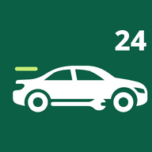

FixGo
เรียกช่างช่วยเหลือรถฉุกเฉิน 24 ชั่วโมง
รถสตาร์ทไม่ติด ยางรั่ว แบตหมด น้ำมันหมด หรือต้องการรถยก เรียกช่างใกล้คุณได้จากเว็บนี้ ไม่ต้องติดตั้งแอป เห็นราคาก่อนเริ่มงานทุกครั้ง
กำลังเปิดระบบเรียกช่าง...
{{if env "LEGAL_CONTACT_PHONE"}}โทรหาทีมงาน {{env "LEGAL_CONTACT_PHONE"}}{{end}}
บริการ
- จั๊มแบต เปลี่ยนแบตเตอรี่
- ปะยาง เปลี่ยนยาง
- ช่างซ่อมรถถึงที่ ไดนาโม ระบบไฟ
- รถยก รถสไลด์
- ส่งน้ำมันถึงที่ ช่างกุญแจ ช่างรถ EV
- ตรวจรถมือสองก่อนซื้อ 134 จุด
ใช้งานอย่างไร
- ล็อกอินด้วยเบอร์โทรและรหัส OTP
- เลือกบริการ ระบบหาช่างที่ใกล้ที่สุดให้
- ช่างเสนอราคา คุณยืนยันก่อนเริ่มงาน
- จ่ายเงินสดกับช่าง หรือโอนพร้อมเพย์
แนะนำ: กด "เพิ่มลงหน้าจอโฮม" ในเมนูของเบราว์เซอร์ จะได้เปิดใช้ได้เหมือนแอป